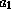
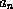
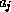
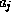

Common Lisp the Language, 2nd Edition


Next: Scope and Extent
Up: Data Types
Previous: Unreadable Data Objects
The
Common Lisp data type hierarchy is tangled and purposely left somewhat
open-ended so that implementors may experiment with new data types
as extensions to the language. This section explicitly states all
the defined relationships between types, including subtype/supertype
relationships,
disjointness, and exhaustive partitioning. The user of Common Lisp
should not depend on any relationships not explicitly stated here.
For example, it is not valid to assume that because a number
is not complex and not rational that it must be a float, because
implementations are permitted to provide yet other kinds of numbers.
First we need some terminology.
If x is a supertype of y, then any object of type y is also
of type x, and y is said to be a subtype of x. If types
x and y are disjoint, then no object (in any implementation) may
be both of type x and of type y. Types  through
 are an exhaustive union
of type x if each 
is a subtype of x, and any object of type x is
necessarily of at least one of the types ;
through are furthermore an exhaustive partition
if they are also pairwise disjoint.
-
The type t is a supertype of every type whatsoever.
Every object is of type t.
-
The type nil is a subtype of every type whatsoever.
No object is of type nil.

-
The types cons, symbol, array, number, and character
are pairwise disjoint.


X3J13 voted in June 1988
(DATA-TYPES-HIERARCHY-UNDERSPECIFIED)
to extend the preceding paragraph as follows.
-
The types cons, symbol, array, number, character,
hash-table, readtable, package, pathname,
stream, random-state, and any single other type created by
defstruct or defclass
are pairwise disjoint.
The wording of the first edition was intended to allow implementors to use
the defstruct facility to define the built-in types hash-table,
readtable, package, pathname, stream, random-state.
The change still permits this implementation strategy but
forbids these built-in types from including, or being included in,
other types (in the sense of the defstruct :include option).
X3J13 voted in June 1988 (FUNCTION-TYPE)
to specify that the type function
is disjoint from the types cons, symbol, array, number, and character.
The type compiled-function is a subtype of function;
implementations are free to define other subtypes of function.

-
The types rational, float, and complex are pairwise disjoint
subtypes of number.
X3J13 voted in March 1989 (REAL-NUMBER-TYPE) to rewrite the preceding item
as follows.
-
The types real and complex are pairwise disjoint
subtypes of number.
Rationale: It might be thought that real and complex should
form an exhaustive partition of the type number. This is purposely
avoided here in order to permit compatible experimentation with extensions
to the Common Lisp number system.
-
The types rational and float are pairwise disjoint
subtypes of real.
Rationale: It might be thought that rational and float should
form an exhaustive partition of the type real. This is purposely
avoided here in order to permit compatible experimentation with extensions
to the Common Lisp number system.
-
The types integer and ratio are disjoint subtypes of rational.
Rationale: It might be thought that integer and ratio should
form an exhaustive partition of the type rational. This is purposely
avoided here in order to permit compatible experimentation with extensions
to the Common Lisp rational number system.
-
The types fixnum and bignum are disjoint subtypes of integer.
Rationale: It might be thought that fixnum and bignum should
form an exhaustive partition of the type integer. This is purposely
avoided here in order to permit compatible experimentation with
extensions to the Common Lisp integer number system, such as the idea of
adding explicit representations of infinity or of positive and negative
infinity.
X3J13 voted in January 1989
(FIXNUM-NON-PORTABLE)
to specify that the types fixnum and bignum
do in fact form an exhaustive partition of the type integer; more precisely,
they voted to specify that the type bignum is by definition equivalent
to (and integer (not fixnum)). This is consistent with the
first edition text in section 2.1.1.
I interpret this to mean that implementators could still experiment with
such extensions as adding explicit representations of infinity, but such infinities
would necessarily be of type bignum.
-
The types short-float, single-float, double-float, and
long-float are subtypes of float. Any two of them must be
either disjoint or identical; if identical, then any other types between
them in the above ordering must also be identical to them
(for example, if single-float and long-float are identical types,
then double-float must be identical to them also).
-
The type null is a subtype of symbol; the only object of type
null is nil.
-
The types cons and null form an exhaustive partition of the type
list.
-
The type standard-char is a subtype of string-char;
string-char is a subtype of character.
X3J13 voted in March 1989 (CHARACTER-PROPOSAL) to remove the type string-char.
The preceding item is replaced by the following.
-
The type standard-char is a subtype of base-character.
The types base-character and extended-character
form an exhaustive partition of character.
-
The type string is a subtype of vector, for string
means (vector string-char).
X3J13 voted in March 1989 (CHARACTER-PROPOSAL) to remove the type string-char.
The preceding item is replaced by the following.
-
The type string is a subtype of vector; it is the union of
all types (vector c) such that c is a subtype of character.
-
The type bit-vector is a subtype of vector, for bit-vector
means (vector bit).
-
The types (vector t), string, and bit-vector are disjoint.
-
The type vector is a subtype of array; for all types x,
the type (vector x) is the same as the type (array x (*)).
-
The type simple-array is a subtype of array.
-
The types simple-vector, simple-string, and
simple-bit-vector are disjoint subtypes of simple-array, for they
respectively mean (simple-array t (*)), (simple-array string-char (*)),
and (simple-array bit (*)).
X3J13 voted in March 1989 (CHARACTER-PROPOSAL) to remove the type string-char.
The preceding item is replaced by the following.
-
The types simple-vector, simple-string, and
simple-bit-vector are disjoint subtypes of simple-array, for they
mean (simple-array t (*)), the union of all types
(simple-array c (*)) such that c is a subtype of character,
and (simple-array bit (*)), respectively.
-
The type simple-vector is a subtype of vector and indeed
is a subtype of (vector t).
-
The type simple-string is a subtype of string.
(Note that although string is a subtype of vector,
simple-string is not a subtype of simple-vector.)
Rationale: The hypothetical name simple-general-vector would have been more accurate than
simple-vector, but in this instance euphony and
user convenience were deemed more important to the design
of Common Lisp than a rigid symmetry.
-
The type simple-bit-vector is a subtype of bit-vector.
(Note that although bit-vector is a subtype of vector,
simple-bit-vector is not a subtype of simple-vector.)
-
The types vector and list are disjoint subtypes of sequence.
-
The types random-state, readtable, package, pathname,
stream, and hash-table are pairwise disjoint.
X3J13 voted in June 1988
(DATA-TYPES-HIERARCHY-UNDERSPECIFIED)
to make random-state, readtable, package, pathname,
stream, and hash-table
pairwise disjoint from a number of other types as well;
see note above.
X3J13 voted in January 1989
(STREAM-ACCESS)
to introduce subtypes of type stream.
-
The types two-way-stream, echo-stream,
broadcast-stream, file-stream, synonym-stream, string-stream, and
concatenated-stream are disjoint subtypes of stream.
-
Any two types created by defstruct are disjoint unless
one is a supertype of the other by virtue of
the :include option.
-
An exhaustive union for the type common is formed by the types
cons, symbol, (array x) where x is either t or
a subtype
of common, string, fixnum, bignum, ratio,
short-float, single-float, double-float, long-float,
(complex x) where x is a
subtype of common,
standard-char, hash-table, readtable, package, pathname,
stream, random-state, and all types created by the user
via defstruct.
An implementation may not unilaterally add subtypes to
common; however, future revisions to the Common Lisp standard may
extend the definition of the common data type.
Note that a type such as number or array may or may
not be a subtype of common, depending on whether or not the given
implementation has extended the set of objects of that type.
X3J13 voted in March 1989
(COMMON-TYPE)
to remove the type common from the language.
Next: Scope and Extent
Up: Data Types
Previous: Unreadable Data Objects
AI.Repository@cs.cmu.edu